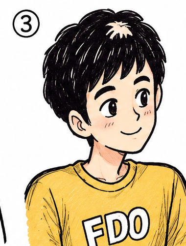

Ba chiếc hộp dán nhãn sai
Cả ba nhãn đều sai. Bạn chỉ được mở một hộp và lấy ra đúng một viên bi.
4 phútGiải →
Hội tụ những bộ óc tò mò
Quan sát hiện trường, xâu chuỗi dữ kiện và tìm ra sự thật cùng Gà và Hiraku. Bạn có đủ tinh ý để phá án trước họ?

Hồ sơ mới nhất
Một hành khách biến mất, một tài xế không nghe thấy gì — và một chi tiết không thể nói dối.
Mở hồ sơ →Mười một điều kiện, bảy chiếc bóng. Chỉ một chiếc chứa Gà ở bên trong.
Mở hồ sơ →Thử thách mỗi ngày
Câu đố số 48 · Logic
Đồng hồ dừng ở 9:15. Cửa sổ đóng chặt, nền nhà khô ráo, nhưng chiếc ô dựng cạnh bàn vẫn còn nhỏ nước. Trong phòng không có ai ngoài nạn nhân. Vậy nước trên chiếc ô từ đâu ra — và tại sao điều đó quan trọng?
Khu giải trí
Ba nghi phạm, một cánh cửa khoá trong. Mười một phút camera bị mù.
Chơi ngayMột dòng chữ vô nghĩa, một khoá dịch ba bậc và bốn chữ số bị bôi đen.
Chơi ngayHai bức ảnh cùng căn phòng, cách nhau bốn tiếng. Bảy thứ đã đổi chỗ.
Chơi ngaySáu lời khai lệch nhau. Xếp lại đúng thứ tự để lộ ra khoảng trống.
Chơi ngayTủ sách hội quán
Một lá đơn từ chức viết tay, và người viết thuận tay trái.
Chuông cửa reo đúng 3h15 mỗi đêm, suốt chín đêm liền.
Một ngã tư, ba nhân chứng, và cái đèn đỏ dài bất thường.
Con phố có mười hai số nhà. Bưu tá vẫn giao thư cho số mười ba.
Góc riêng
NGÀY 14 THÁNG 9
Chuyện là thế này. Tôi cúi xuống nhặt một mẩu giấy dưới gầm bàn hiện trường, kính rơi ra, và khi sờ soạng tìm lại thì tay tôi chạm phải một thứ lạnh ngắt dán dưới mặt bàn.
Hiraku nói đó là chìa khoá dự phòng. Anh ấy nói bằng cái giọng bình thản như thể ai cũng biết. Nhưng tôi biết chắc là anh ấy chưa nhìn xuống gầm bàn lần nào.
NGÀY 2 THÁNG 9
Đừng. Đặc biệt là đừng đặt cốc xuống bàn hiện trường. Tôi đã học được bài học này theo cách tốn kém nhất, và bây giờ trong hồ sơ 029 có vĩnh viễn một vòng tròn nâu mà không ai giải thích được.
Hiraku đã khoanh tròn nó và viết bên cạnh: "manh mối do nội bộ tạo ra".
Nhân vật chính
Hai cách nhìn khác nhau.
Một mục tiêu duy nhất: sự thật.
Bình tĩnh, sắc bén, luôn tìm thấy quy luật ẩn sau những dữ kiện tưởng như rời rạc.
Hơi hậu đậu nhưng có con mắt quan sát khác thường. Đôi khi chính cậu là… manh mối.
Thử thách hôm nay
Trong căn phòng khóa kín, đồng hồ dừng ở 9:15. Cửa sổ đóng, nền nhà khô, nhưng chiếc ô bên cạnh bàn vẫn còn nhỏ nước.
Gia nhập hội quán
Vụ án mới, câu đố mới, và đôi khi là một trang nhật ký Gà chưa kịp xin phép đăng. Không quảng cáo, không thư rác.